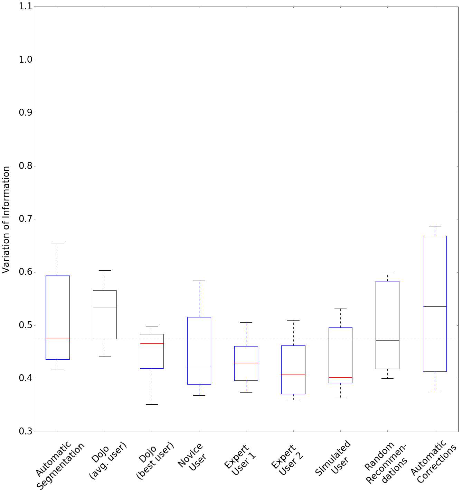
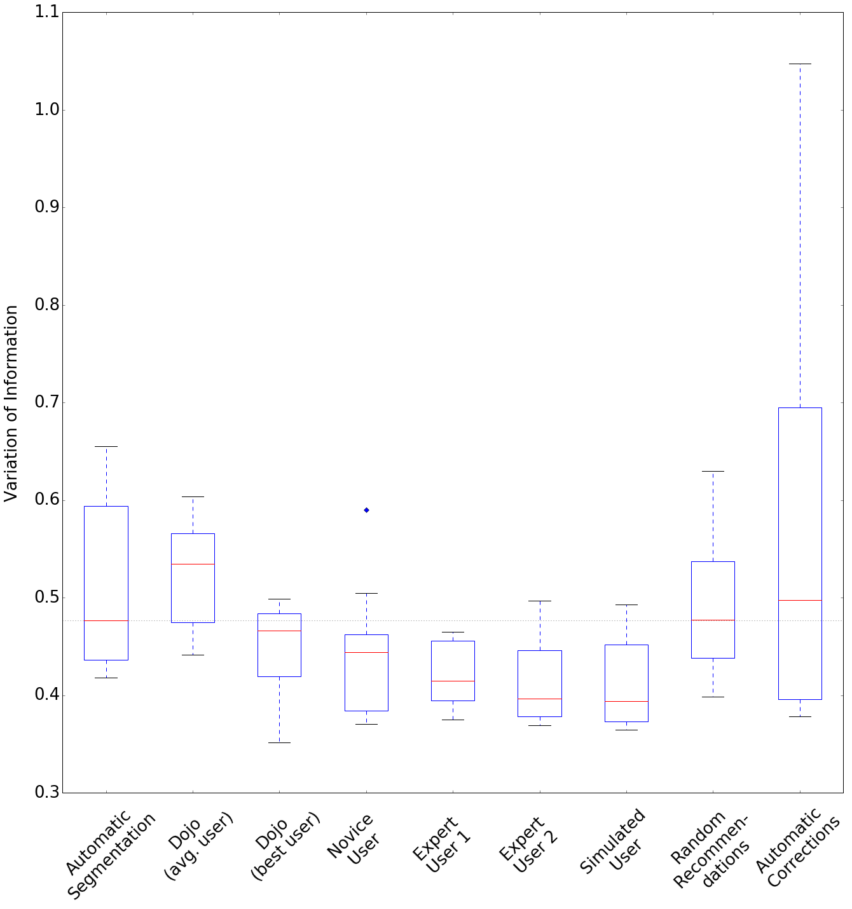
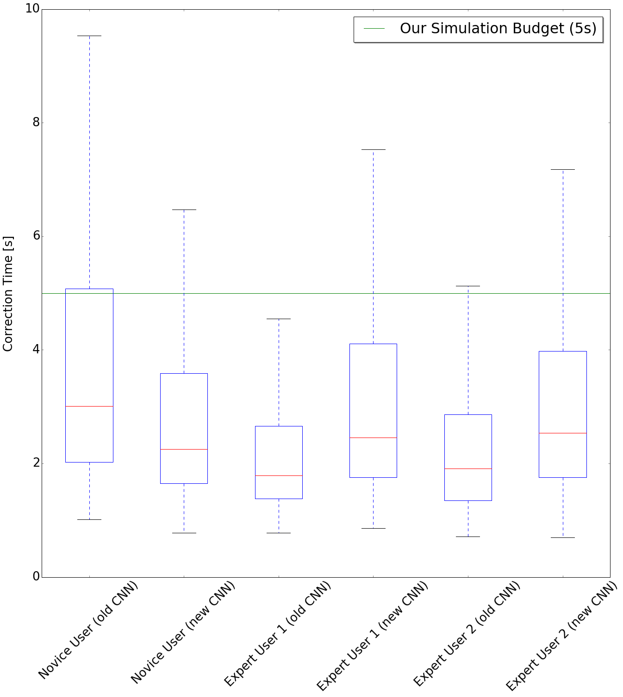
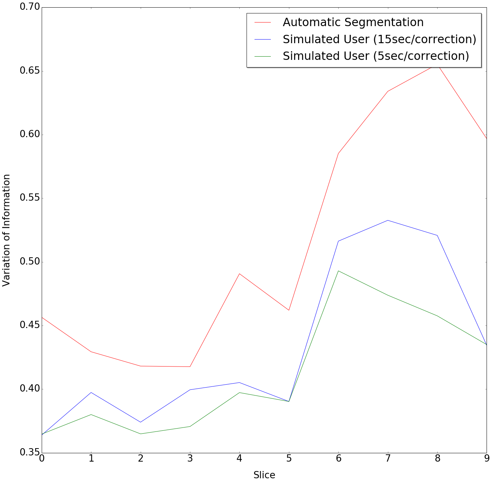
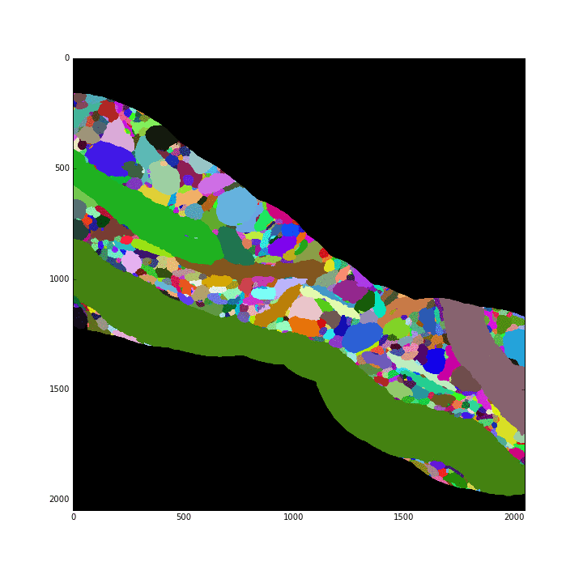
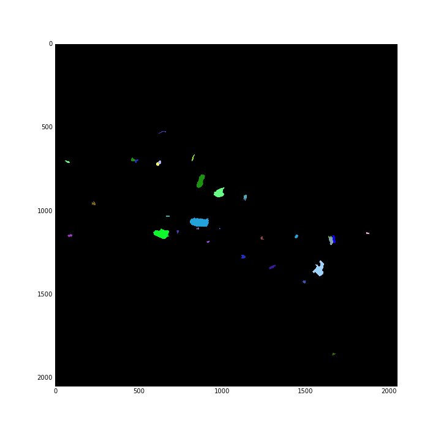

Results (updated)
Previously reported Results
Training Data: 1024 x 1024 x 70 voxels, 79828 correct regions and 79828 split error patches
Test Data: 1024 x 1024 x 5 voxels
train. loss 0.37
test loss 0.39
precision/recall 0.83
f1-score 0.83
test acc. 83.02%
Comparison against Haehn et al.'s Proofreading user study (testing data size 400 x 400 x 10 voxels)

All scores are reported as median Variation of Information (the lower the better):
Automatic Segmentation: 0.476
Dojo (avg. user): 0.535
Dojo (best user): 0.466
Novice User: 0.424
Expert User 1: 0.43
Expert User 2: 0.407
Simulated User: 0.402* (previously 0.426)
Random Recommendations: 0.472* (previously 0.475)
Automatic Corrections: 0.536
* indicates updated time budget based on user experiment findings
Updated Results, after adding new dataset
Training Data: 2048 x 2048 x 250 voxels, 266088 correct regions and 266088 split error patches
Test Data: 2048 x 2048 x 50 voxels
train. loss. 0.045
test loss. 0.064
precision/recall 0.9
f1-score 0.9
test acc. 90.12%
Comparison against Haehn et al.'s Proofreading user study (testing data size 400 x 400 x 10 voxels)

All scores are reported as median Variation of Information (the lower the better):
Automatic Segmentation: 0.476
Dojo (avg. user): 0.535
Dojo (best user): 0.466
Novice User: 0.444
Expert User 1: 0.415
Expert User 2: 0.396
Simulated User: 0.394
Random Recommendations: 0.477
Automatic Corrections: 0.498
Real-world User Experiment
Timing
We have performed a real-world user experiment with 1 novice and 2 expert users, where our system recommended errors with suggested corrections on an interactive website. Each user tested both our existing network and our new re-trained network (3 users x 2 trials; avg. num. error decisions = ~450 per trial in 30 minutes).

Old CNN refers to the initially reported training data size, New CNN refers to the updated training data size.
For our simulated user, we budgeted 15 seconds for each split/merge error decision. However, from real-world user performance, the avg. time was ~3.2 seconds. Hence, our new simulation budget is 5 seconds.

Example Corrections
Example corrections performed by our simulated user showing snapshots at every 30 iterations until a prediction threshold of 0.95 is reached.
Left: output segmentation
Right: difference to initial automatic segmentation

